Offline regeneration; no LLM or fuzzing was executed.
| Metric | Meaning | Denominator |
|---|---|---|
| First-pass RSR | The first Candidate C compiled, linked, and created an executable. | Samples that produced an initial candidate. |
| Final RSR@R | At least one executable was created within the compile-repair budget. | Samples that produced an initial candidate. |
| Program Behavioral Pass Rate | The final candidate completed fuzzing with no reproducible final mismatch. | Samples that completed behavioral validation; generation and compile failures are excluded. |
| Initial / Final Behavioral Pass | Behavioral success before repair versus after the final repair round. | Candidates that completed the corresponding behavioral validation. |
| Input Match Macro / Micro | Average per-sample match rate / all matching valid inputs pooled together. | Valid inputs executed on both reference and candidate. |
| Counterexample Detection Rate | A reproducible divergence was found for the final candidate. | Samples that completed behavioral validation. |
| Canonical E2E | The complete canonical pipeline ended with an accepted behavioral PASS. | All eligible samples, including generation and compile failures. |
| Repair Gain | Final rate minus initial rate, measured in percentage points. | N/A for F2 and F6 because error context and repair are disabled. |
| Mean Tokens / Runtime | Average recorded LLM tokens and total execution time per run. | Eligible runs with a recorded value. |
Flow order: F1 Full; F2 no error context; F3 no pseudocode; F4 no direct Clean IR; F5 Raw IR iterative; F6 Raw IR one-call derived from F5. Error bars are 95% confidence intervals, and n is the eligible sample count after validation.
| Flow | N | Eligible N | First-pass RSR | Final RSR@R | Program Behavioral Pass Rate | Initial Behavioral Pass Rate | Final Behavioral Pass Rate | Input Match Macro | Input Match Micro | Counterexample Detection Rate | Canonical E2E | Compilation Repair Gain | Behavioral Repair Gain | Mean Tokens | Mean Runtime |
|---|---|---|---|---|---|---|---|---|---|---|---|---|---|---|---|
| F1 | 40 | 40 | 37/38 (97.4%) | 38/38 (100.0%) | 31/38 (81.6%) | 21/38 (55.3%) | 31/38 (81.6%) | 87.8% | 92.0% | 7/38 (18.4%) | 31/40 (77.5%) | +2.6 pp | +26.3 pp | 537965 | 220.7s |
| F2 | 40 | 31 | 30/30 (100.0%) | 30/30 (100.0%) | 21/30 (70.0%) | 21/30 (70.0%) | 21/30 (70.0%) | 86.7% | 92.4% | 9/30 (30.0%) | 21/31 (67.7%) | N/A | N/A | 146770 | 67.7s |
| F3 | 40 | 40 | 40/40 (100.0%) | 40/40 (100.0%) | 32/40 (80.0%) | 22/40 (55.0%) | 32/40 (80.0%) | 90.8% | 93.5% | 8/40 (20.0%) | 32/40 (80.0%) | +0.0 pp | +25.0 pp | 517928 | 201.0s |
| F4 | 40 | 40 | 40/40 (100.0%) | 40/40 (100.0%) | 32/40 (80.0%) | 24/40 (60.0%) | 32/40 (80.0%) | 92.1% | 96.4% | 8/40 (20.0%) | 32/40 (80.0%) | +0.0 pp | +20.0 pp | 494691 | 175.1s |
| F5 | 40 | 40 | 36/37 (97.3%) | 37/37 (100.0%) | 25/37 (67.6%) | 10/37 (27.0%) | 25/37 (67.6%) | 74.7% | 77.1% | 12/37 (32.4%) | 25/40 (62.5%) | +2.7 pp | +40.5 pp | 1328970 | 291.8s |
| F6 | 40 | 40 | 22/23 (95.7%) | 22/23 (95.7%) | 7/21 (33.3%) | 7/21 (33.3%) | 7/21 (33.3%) | 54.1% | 57.5% | 14/21 (66.7%) | 7/40 (17.5%) | N/A | N/A | 368247 | N/A |
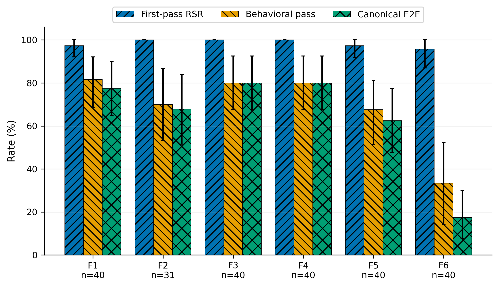
Ý nghĩa: So sánh ba kết quả chính của từng flow: compile ngay lần đầu, PASS hành vi cuối, và thành công end-to-end.
Cách tính: First-pass RSR = first compile success / initial candidates; Behavioral pass = final PASS / completed behavioral validations; Canonical E2E = accepted PASS / all eligible samples.
Cách đọc: Cột càng cao càng tốt. Ba cột có thể dùng mẫu số khác nhau; thanh đen là 95% CI, không phải lỗi chạy.
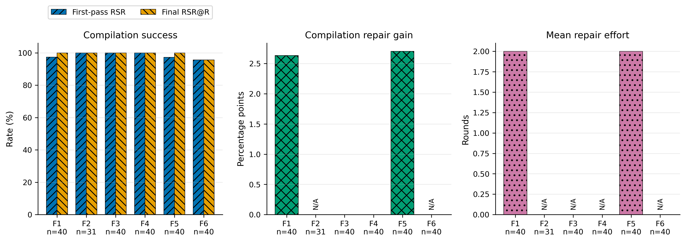
Ý nghĩa: Cho biết repair có biến Candidate C compile lỗi thành executable được hay không và tốn bao nhiêu vòng.
Cách tính: Final RSR dùng any compile success trong budget; repair gain = Final RSR - First-pass RSR (điểm phần trăm); mean rounds chỉ tính các compile-repair case.
Cách đọc: Khoảng cách First/Final lớn nghĩa là compile repair hữu ích. Gain cao với ít vòng tốt hơn; N/A nghĩa là flow không bật repair.
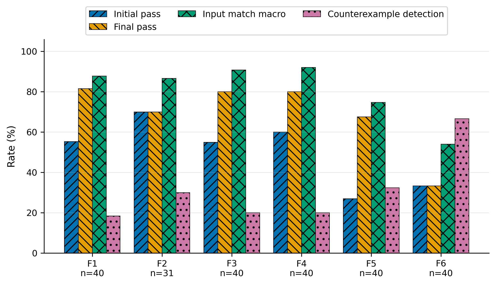
Ý nghĩa: So sánh hành vi trước và sau repair, tỷ lệ input match, và tỷ lệ Candidate cuối còn counterexample.
Cách tính: Initial/Final pass = PASS / candidates hoàn thành validation tương ứng; Match Macro = trung bình (matches/valid inputs) theo sample; Counterexample rate = final reproducible counterexample / completed validations.
Cách đọc: Initial, Final và Match cao là tốt; Counterexample Detection thấp là tốt. Match Rate không phải ngưỡng PASS.
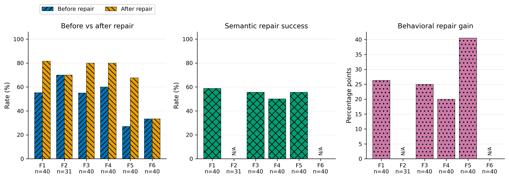
Ý nghĩa: Đo riêng tác dụng của behavioral repair đối với các Candidate đã có divergence tái hiện được.
Cách tính: Semantic repair success = repair cases kết thúc bằng behavioral PASS / behavioral repair cases; Behavioral gain = Final pass rate - Initial pass rate.
Cách đọc: After cao hơn Before, success rate cao và gain dương nghĩa là repair có ích. F2 là one-shot nên các repair metric là N/A.
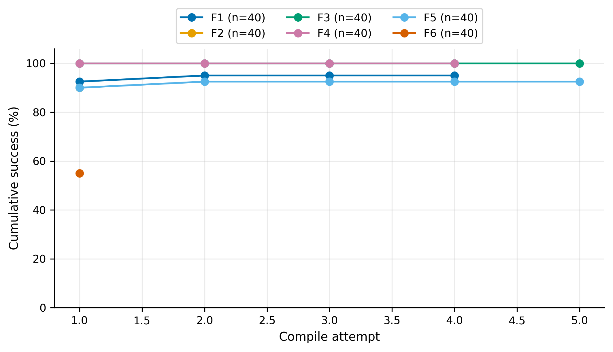
Ý nghĩa: Cho biết đến compile attempt thứ r đã có bao nhiêu run từng tạo được executable.
Cách tính: Tại r: runs có ít nhất một compile success trong attempts 1..r / toàn bộ runs của flow.
Cách đọc: Đường tăng nhanh và đạt mức cao sớm là tốt. Đường nằm ngang nghĩa là thêm attempt không cứu thêm sample.
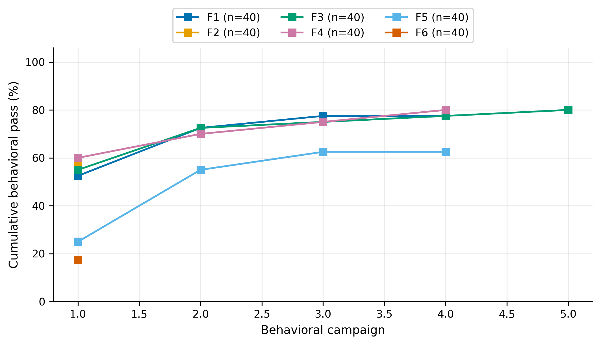
Ý nghĩa: Cho biết đến behavioral campaign thứ r đã có bao nhiêu run từng đạt một campaign hoàn thành với zero mismatch.
Cách tính: Tại r: runs có ít nhất một completed zero-mismatch campaign trong campaigns 1..r / toàn bộ runs của flow.
Cách đọc: Đường cao sớm nghĩa là đạt behavioral pass nhanh. Đây là ever-pass cumulative, không thay thế trạng thái Candidate cuối.
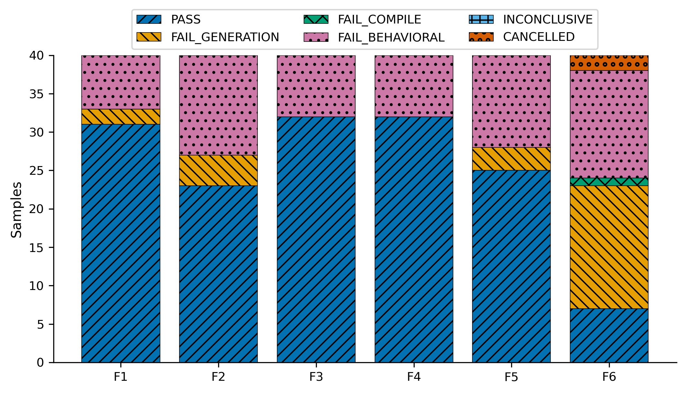
Ý nghĩa: Phân rã trạng thái cuối của toàn bộ sample trong từng flow.
Cách tính: Đếm sample theo PASS, FAIL_GENERATION, FAIL_COMPILE, FAIL_BEHAVIORAL và INCONCLUSIVE; mỗi sample thuộc đúng một nhóm.
Cách đọc: Phần PASS càng lớn càng tốt. Các phần fail cho biết pipeline dừng ở generation, compilation hay behavioral validation.
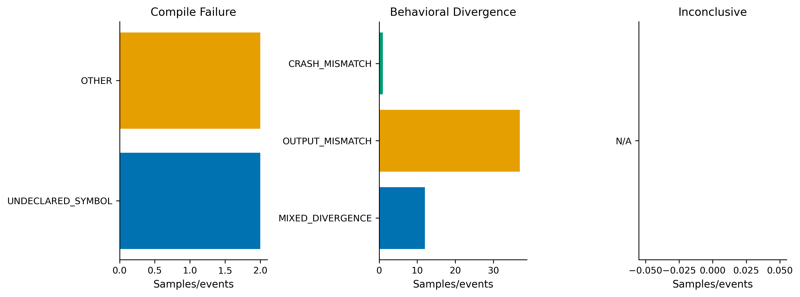
Ý nghĩa: Cho biết lỗi thuộc loại compiler, divergence hành vi hay nguyên nhân inconclusive nào.
Cách tính: Compile panel đếm failed compile attempts; behavioral panel đếm sample theo divergence của campaign cuối; inconclusive panel đếm sample.
Cách đọc: Thanh dài chỉ ra failure mode phổ biến cần ưu tiên xử lý. Ba panel có đơn vị đếm khác nhau nên không so trực tiếp độ dài giữa panel.
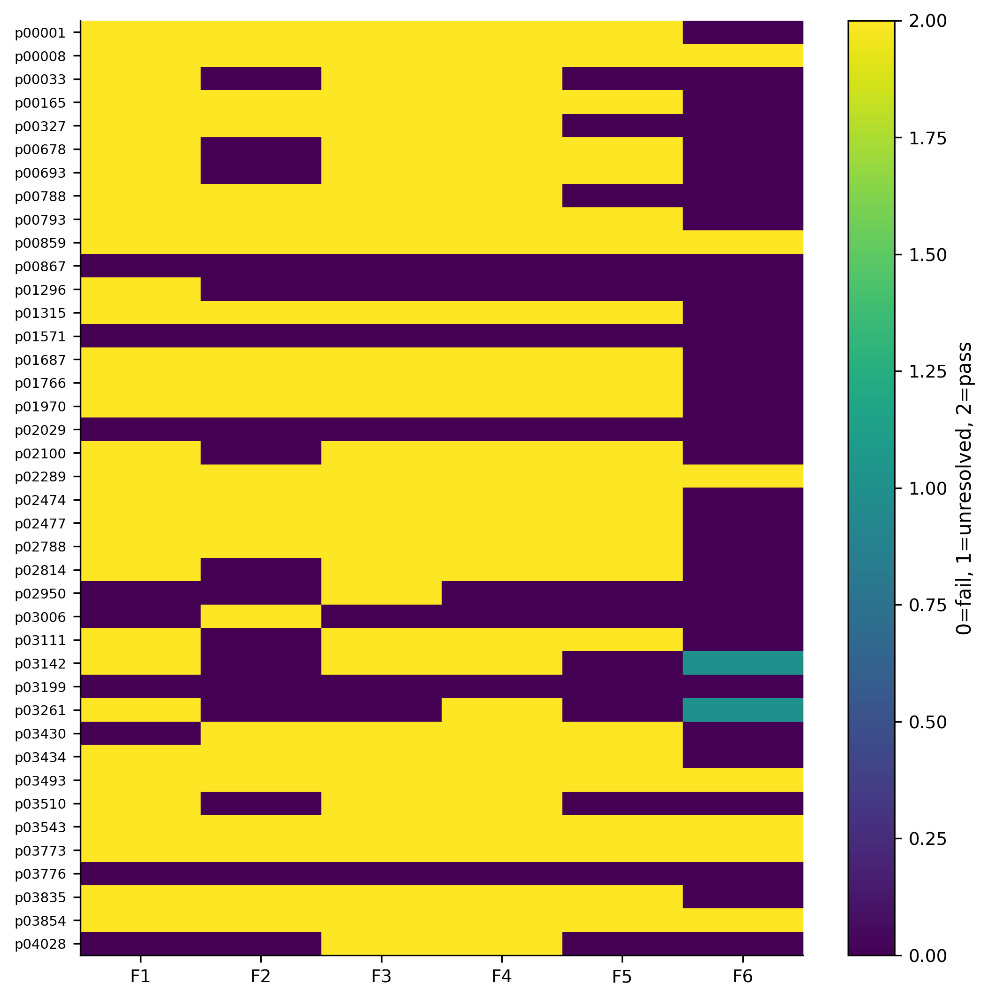
Ý nghĩa: Hiển thị trạng thái của từng sample khi chạy qua từng flow.
Cách tính: Mỗi ô: FAIL=0, INCONCLUSIVE=1, PASS=2.
Cách đọc: Đọc ngang để thấy một sample nhạy với component nào; đọc dọc để thấy flow nào ổn định hơn. Giá trị 0 gộp mọi loại FAIL.
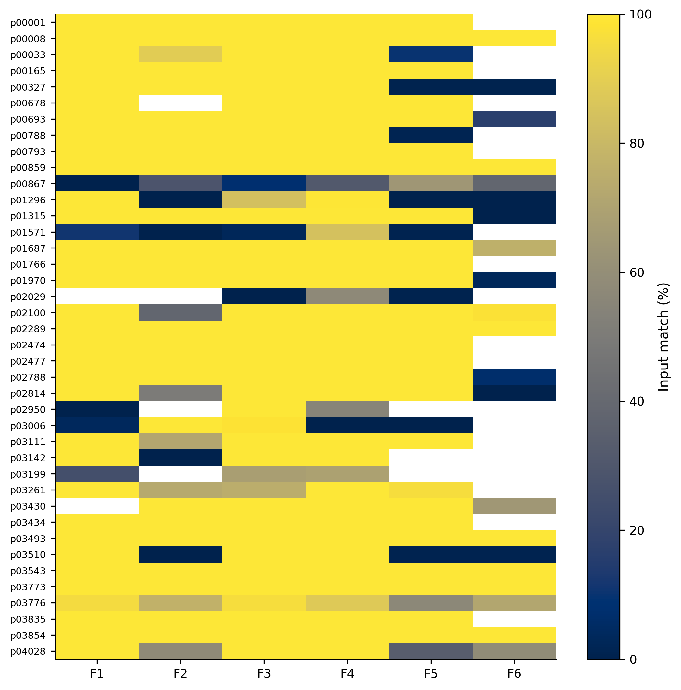
Ý nghĩa: Hiển thị phần trăm valid input có behavior tuple giống nhau cho từng cặp sample-flow.
Cách tính: Mỗi ô = fuzz matches / fuzz valid × 100%; ô trống là không có behavioral validation hợp lệ.
Cách đọc: 100% nghĩa là không thấy mismatch trong corpus đã chạy, không chứng minh tương đương với mọi input.
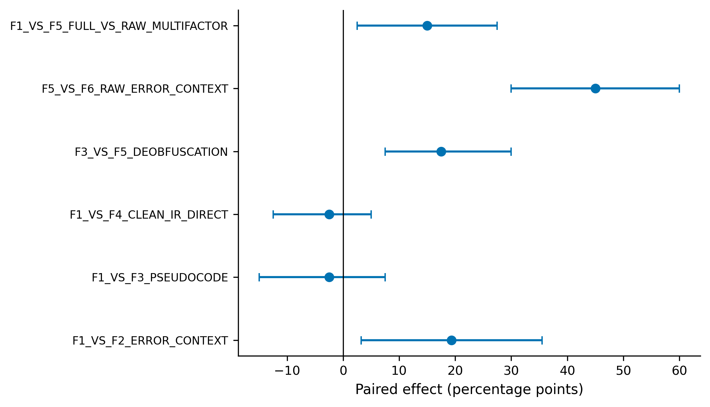
Ý nghĩa: Ước lượng chênh lệch Canonical E2E cho từng cặp flow paired.
Cách tính: Effect = E2E(flow A) - E2E(flow B) theo cùng sample/repeat, đơn vị điểm phần trăm; interval là bootstrap 95% CI.
Cách đọc: Điểm bên phải 0 nghiêng về A, bên trái nghiêng về B. CI cắt đường 0 nghĩa là dữ liệu chưa cho thấy khác biệt rõ.
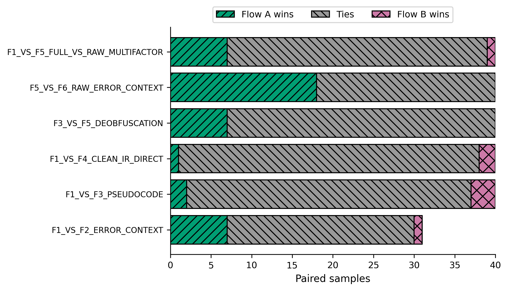
Ý nghĩa: Đếm kết quả thắng/hòa/thua của Flow A so với Flow B theo sample.
Cách tính: A win: A E2E PASS và B FAIL; tie: cùng kết quả; B win: B PASS và A FAIL.
Cách đọc: So sánh phần A wins với B wins; nhiều tie nghĩa là hai flow thường cho cùng kết quả trên sample paired.
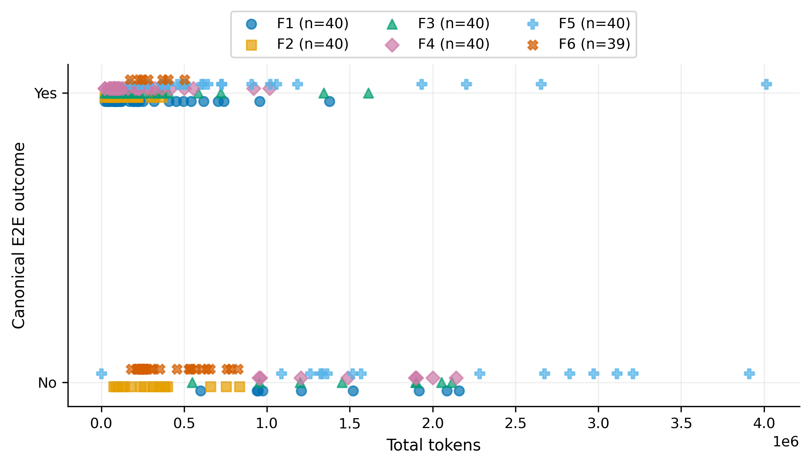
Ý nghĩa: Liên hệ lượng token của một run với kết quả Canonical E2E.
Cách tính: Mỗi chấm là một run: trục X = total input + output tokens; trục Y = E2E No/Yes; màu/ký hiệu = flow.
Cách đọc: Xem nhóm PASS có cần nhiều token hơn không. Đây là association, không chứng minh tăng token gây ra PASS.
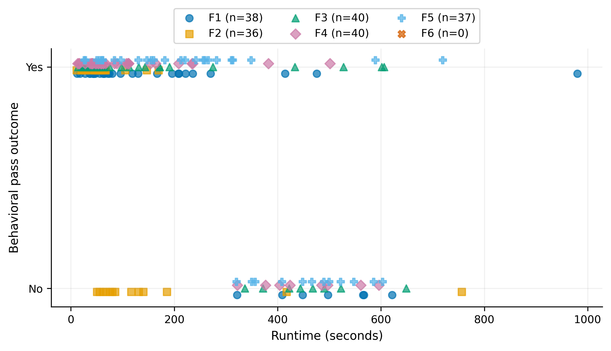
Ý nghĩa: Liên hệ tổng runtime của run với behavioral PASS cuối.
Cách tính: Mỗi chấm là một run có runtime và behavioral verdict; X = total runtime seconds; Y = final behavioral No/Yes.
Cách đọc: Cho biết PASS thường nhanh hay chậm hơn trong dữ liệu; không suy ra runtime dài tự động cải thiện correctness.
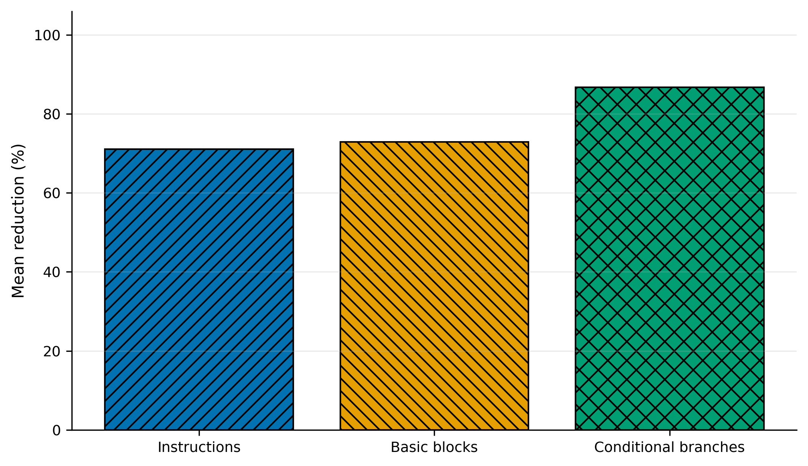
Ý nghĩa: Đo Clean IR đã đơn giản hóa Raw IR bao nhiêu.
Cách tính: Reduction = (raw count - clean count) / raw count × 100%, tính cho instructions, basic blocks và conditional branches rồi lấy mean theo sample.
Cách đọc: Cột cao nghĩa là IR giảm nhiều cấu trúc hơn; đây không phải bằng chứng semantic correctness.
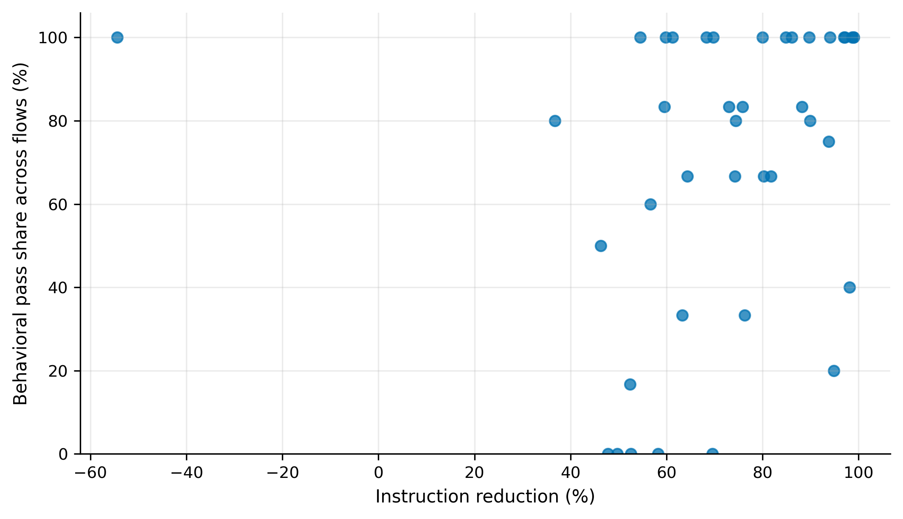
Ý nghĩa: Kiểm tra mô tả xem sample được giảm instruction nhiều có thường PASS hành vi ở nhiều flow hơn hay không.
Cách tính: Mỗi chấm là một sample: X = instruction reduction; Y = số flow behavioral PASS / số flow có behavioral verdict × 100%.
Cách đọc: Chỉ quan sát xu hướng điểm; không dùng reduction làm correctness oracle và không kết luận quan hệ nhân quả.
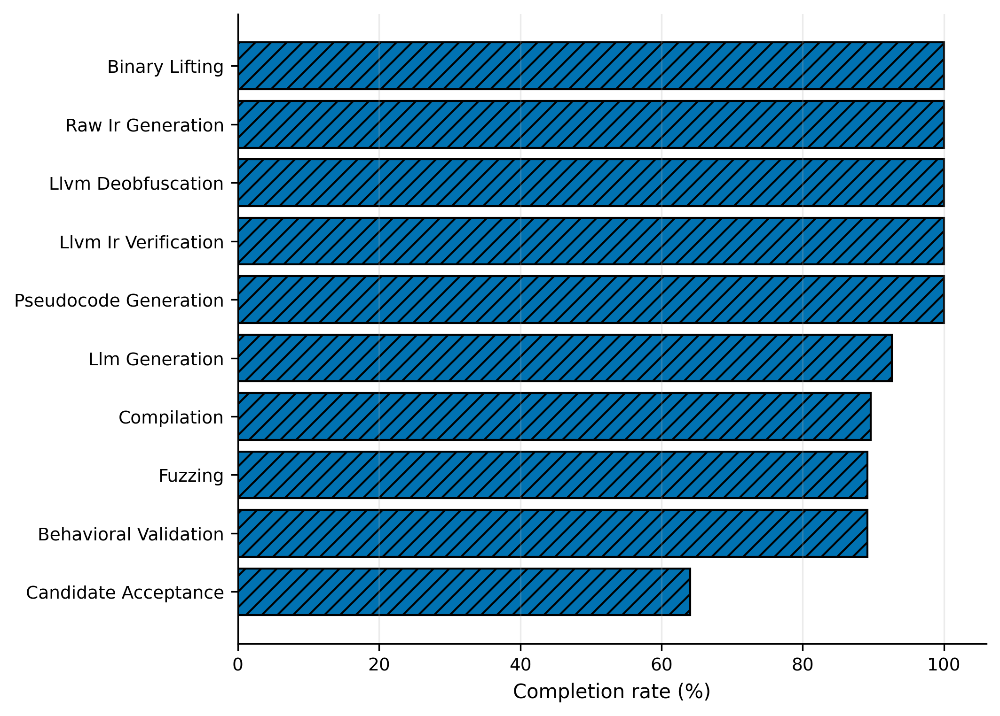
Ý nghĩa: Cho biết tỷ lệ hoàn thành tại từng stage của pipeline.
Cách tính: Mỗi stage = tổng completed flow-runs / tổng eligible flow-runs trên F1–F6; đây là pooled flow-runs, không phải unique samples.
Cách đọc: Stage giảm mạnh là bottleneck nơi nhiều run dừng lại. Candidate acceptance là điểm cuối.